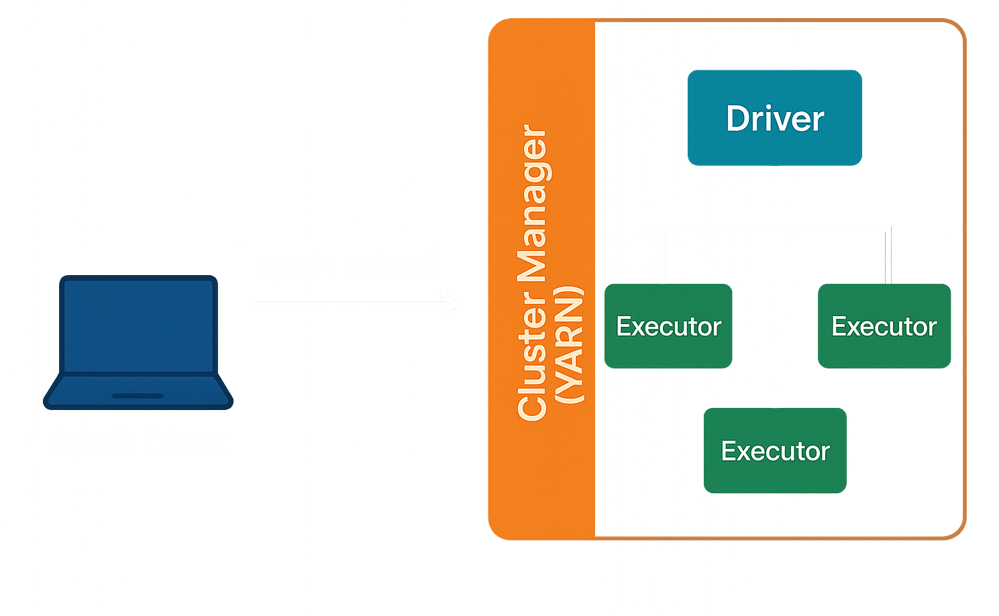
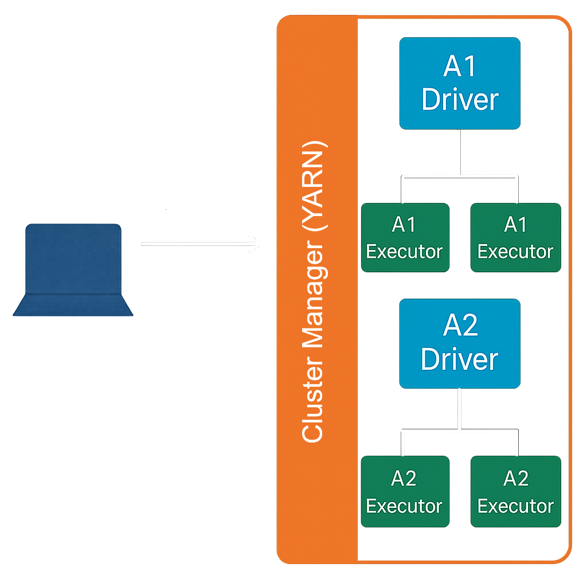
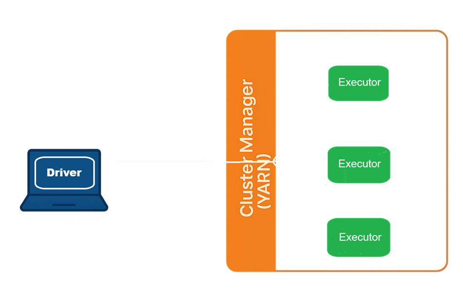
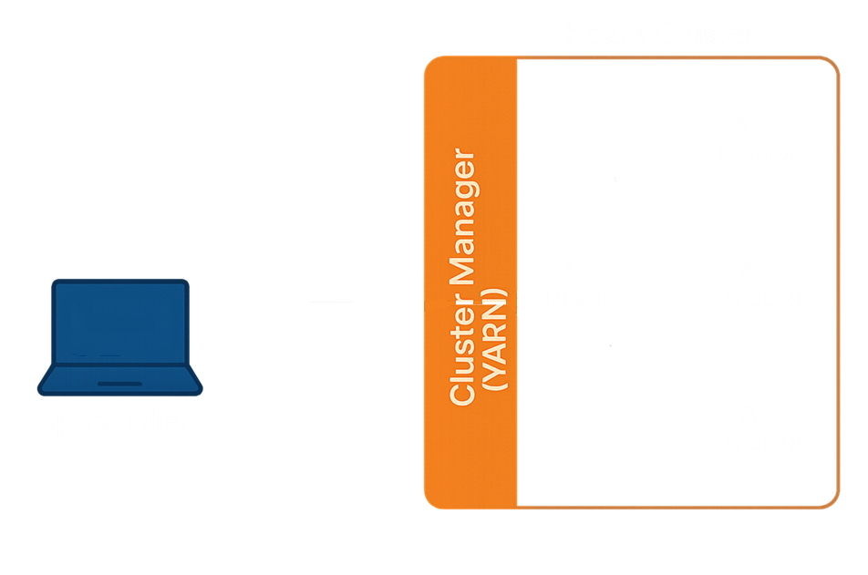

- Understanding Big Data
- Understanding Hadoop
- Spark Advantages over Hadoop
- Introduction to Apache Spark
- Set Up Spark On Local Machine
- Create First Spark Application in Databricks Cloud
- Spark Table Vs Spark DataFrame
- Creating Spark Dataframe
- Creating Spark Tables
- Querying with Spark Table
- Dataframe Transformation & Actions
- Applying Transformations
- Querying Spark DF
Introduction to Apache Spark
Apache Spark is the distributed data processing framework. It is the most popular and widely adopted data processing framework in a data lake. It is an open source analytics engine used for big data workloads.
Apache Spark is a powerful tool used for processing large amount of data. It allows multiple computers in a cluster to work togeather to handle tasks sumultaneously, making the whole process faster and more efficient.
Spark Ecosystem

Diagram represents the Spark Ecosystem. The Spark ecosystem is designed in two layers. The bottom layer is the Spark Core Layer. Then we have the next layer, a set of DSLs, libraries, and APIs. These two things together make the Spark ecosystem.
The Spark core layer itself has got two parts. A distributed Computing Engine And a set of core APIs. And this whole thing runs on a cluster of computers(computer Hardware) to offer you distributed data processing.
However, Spark does not manage the cluster. It only gives you a data processing framework. So, you are going to need a cluster manager.

The Hadoop YARN resource manager is the most commonly used cluster manager for Spark. However, you have other options, such as Mesos and Spark Standalone Cluster Manager.
Similarly, Spark also doesn't come with an in-built storage system. And it allows you to process the data, which is stored in a variety of storage systems. The most popular and commonly used storage systems are HDFS, Amazon S3, Azure Data Lase Storage, Google Cloud Storage, and the Cassandra file system.
So, one thing is obvious. Apache Spark does not offer Cluster Management and Storage Management. All you can do with Apache Spark is to run your data processing workload. And that part is managed by the Spark Compute Engine.
So the compute engine is responsible for a bunch of things. For example, breaking your data processing work into smaller tasks,scheduling those tasks on the cluster for parallel execution, providing data to these tasks, managing and monitoring those tasks, provide you fault tolerance when a job fails. And to do all these, the core engine is also responsible for interacting with the cluster manager and the data storage manager. So the Spark compute engine is the core that runs and manages your data processing work and provides you with a seamless experience.
All you need to do is submit your data processing jobs to Spark, and the Spark core will take care of everything else.
Now let's move a level up. The second part of the Spark Core - The Core APIs. This layer is the programming interface layer that offers you the core APIs in four major languages - Scala, Java, Pyhton, and R programming language.
These are the APIs that we used to write data processing logic during the initial days of Apache Spark. However, these APIs were based on resilient distributed datasets (RDD). And people found them a little tricky to learn and use for their day-to-day data processing work. However, these APIs are the most complicated way to work with Apache Spark. And the Spark creators are now recommending avoiding them as much as possible.
Now let's move to a top most layer. The topmost layer is the prime area of interest for most Spark developers and data scientists. This layer is again a set of libraries, packages, APIs, and DSL. These are developed by the Spark community over and above the Core APIs. So, you will be using these top-level APIs and DSLs. But internally, all of those will be using Spark Core APIs, and ultimately things will go to the Spark Compute Engine.
The topmost API layer is grouped into four categories to support four different data processing requirements. The first group is a set of two things. Spark SQL and then Spark DataFrame/Dataset APIs. Spark SQL allows you to use SQL queries to process your data. So that part is quite simple for those who already know SQL. Spark DataFrame/DataSet will allow you to use functional programming techniques to solve your data crunching problems. These APIs are available in Java, Scala, and Python. Both of these together can help you resolve most of the structured and semistructured data crunching problems.
The next one is Spark Streaming libraries, and they allow you to process a continuous and unbounded stream of data.
Then you have a set of libraries specifically designed to meet your machine learning, deep learning, and AI requirements.
The last collection is for Graph Processing libraries, and they allow you to implement Graph Processing Algorithms using Apache Spark.
So the topmost layer is nothing but a set of libraries and DSLs to help you solve your data crunching problems. And all these are available in multiple languages such as Java, Scala, Python, and R.
Execution Methods
Apache Spark is a distributed computing platform. It is used to create programs and execute them on a Spark Cluster.
But this lecture is all about - How do we execute Spark programs on a Spark Cluster?
How to execute Spark Programs?
We have two methods to run spark programs.
Interactive Clients (REPL Mode)
Submit a Job (job submission)
🧪 1. Interactive Clients (REPL Mode)
Great for learning, development phase, testing, and data exploration.
Tools
spark-shell
Jupyter Notebook
How It Works:
You launch an interactive shell, type Spark commands, and see results immediately. It’s a REPL (Read-Eval-Print Loop), so you can test snippets of code without writing a full script.
🚀 2. Submit a Job (Batch Mode)
This is the professional way to run Spark applications—perfect for production.
Tools
spark-submit
Databricks Notebook
How It Works:
You write a full Spark application, then submit it to a Spark cluster using the spark-submit command.
How your program runs?
We have already learned that we develop Spark applications and submit them to the Spark Cluster for execution.
However, we still don't know how Spark is going to execute our application on a distributed cluster.
How is the Spark distributed processing model works?
Spark applies a master-slave architecture to every application. So, when we submit our application to the Spark, it is going to create a master process for your application.
This master process is then going to create a bunch of slaves to distribute the work and complete your job.
In Spark terminology, the master is a driver, and the slaves are the executors.

This is about your application and the containers - Not about the cluster. The cluster itself might have a master-node and a bunch of slave nodes.
So, the Spark engine is going to ask for a container from the underlying cluster manager to start the driver process. Once started, the driver is again going to ask for some more containers to start the executor process.
And this happens for each application. Suppose you are using the spark-submit utility, and you submitted an application A1. Let's assume you submitted one more application, A2. Spark engine again will request a container and start the A2 driver.
A1 and A2 are two independent applications. Both of them are following a master-salve architecture and have their own dedicated driver and executors.

Every spark application applies a master-slave architecture and runs independently on the cluster.
We still have two open questions
How Spark runs your application on a local machine?
How Spark runs your application on a local machine when we do not have a cluster
How Spark runs our application when we use interactive clients?
how Spark runs our application when we use interactive tools. Because in that case, we do not submit the application to the Spark cluster.
Let's start with the first question.
How does Spark run on a local machine?
You can execute a Spark application on your local machine without even having a real cluster.
We can configure our application to run on a variety of clusters, Spark engine is compatible with the following cluster managers.
local[n]
YARN
Kubernetes
Mesos
Standalone
In next lecture, we will execute the pyspark in pycharm IDE on Local machine. we will write one small program but as of now just know we use spark.master = local[2] to run locally with 2 threads. This is how we can use local cluster manager.
So, when you configure your application to run with a single local thread spark.master = local[1] or dont provide, then you will have a driver only and no executors. And in that case, your driver is forced to do everything itself. Nothing happens in parallel.
local[3] means 1 driver and 2 executors.
Lets move to the next question
How to Spark with interactive tools?
Spark gives you a choice to run your application in one of the following modes.
Client mode
Cluster mode
Client mode
The Client mode is designed for interactive clients, such as spark-shell and the notebooks. In this mode, the Spark driver process runs locally at your client machine. However the driver still connects to the cluster manager and starts all the executors on the cluster.

If you are quitting your client or you log off from your client machine, then your driver dies, and hence the executors will also die in the absence of the driver. So, client mode is suitable for interactive work but not for long-running jobs.
Cluster mode
The cluster mode is designed to submit your application to the cluster and let it run. In this mode, everything runs on the cluster. Your driver, as well as the executors.

Once you submit your application to run in cluster mode, you can log off from the client machine, and your driver is not impacted because it is running on the cluster.
Next »